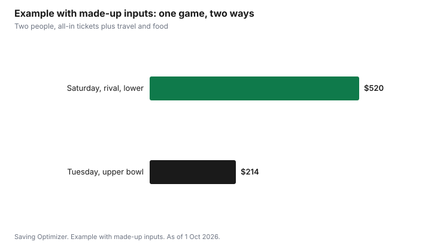

Sports · Canada
Seeing an NHL Game in Canada for Less: Ticket Timing, Fees, AHL and Junior Options
Seeing an NHL game in Canada costs less on a weeknight against a less popular opponent, in upper-level seats, bought when you compare all-in prices across the team's own sale and resale listings, as of 1 October 2026. Prices for the seven Canadian NHL teams move with demand, so a Saturday game against a rival or a star can cost several times as much as a Tuesday game in the same seat. Getting there and eating at the arena can cost as much as a cheap ticket, so plan those too. For live hockey at a fraction of the price, AHL, PWHL and junior games in many Canadian cities are a strong alternative.
Key takeaways
- Opponent, day of week and timing move prices more than anything else. Weeknights against less popular teams are cheapest.
- Compare all-in prices. The Competition Act bans drip pricing, and Ontario requires ticket sellers to show the total price.
- In Ontario, resale is capped at the original total price plus taxes and the platform's standard fees.
- Parking, transit, food and drinks can double the cost of a cheap seat; plan them before you go.
- AHL, PWHL, major junior and university hockey offer live games for much less in many Canadian cities.
- Example with made-up inputs: two people at a weeknight game with transit and food from home spend $214 instead of $520.
What moves the price
| Factor | Cheaper | More expensive |
|---|---|---|
| Day of week | Monday to Thursday | Friday, Saturday, holidays |
| Opponent | Teams with fewer local fans | Rivals, Original Six, star players, other Canadian teams |
| Time of season | October to early December, some January weeknights | Opening night, holidays, late-season playoff races |
| Seat | Upper bowl, corners, end zones | Lower bowl, centre ice, clubs |
| Team form | Teams out of the race late in the season | Contending teams and playoff pushes |
Teams and ticket platforms use dynamic pricing, so the team's own price for the same seat can change as demand rises or falls. Resale prices move too. There is no guaranteed best time to buy: prices sometimes fall in the last hours before a game with weak demand, and sometimes rise for a game that sells out. For a game you really want to see, buying when the all-in price fits your budget is safer than waiting.
Compare all-in prices
Since 2022, the federal Competition Act has treated drip pricing, showing a price that cannot be reached because of mandatory added fees, as deceptive. The Competition Bureau has acted against ticket sellers on this, including a penalty against Cineplex that was upheld in January 2026. In Ontario, the Ticket Sales Act requires ticket sellers to show the total price, including fees, from the start. Our guide to ticket fees and all-in pricing explains the rules in detail.
In practice, check the price with all fees and taxes before choosing between the team's sale and a resale listing. Compare the same section and row. Note delivery method: most NHL tickets are now mobile tickets tied to an app account.
Resale: when it helps and how to stay safe
Resale can be cheaper than the team's price for low-demand games, because season ticket holders sell seats they cannot use. In Ontario, resale is capped at the original total price plus taxes and the platform's standard fees, and resellers must offer a money-back guarantee or proof of validity. Other provinces have different rules. Buy through the team's official resale partner or a reputable platform, pay by credit card, and never pay by e-transfer, gift card or cryptocurrency to a stranger. The resale safety guide covers common scams.
Getting there and eating
The ticket is not the whole cost. Downtown arena parking on game nights can be expensive, and arena food and drinks cost more than the same items outside. Ways to lower this part:
- Take transit. Some teams and cities have offered transit deals with game tickets; check before you go.
- Park farther away and walk, or park near a transit station outside the core.
- Eat before the game. Arena policies on outside food vary, so check the venue's bag and food rules.
- Bring an empty refillable bottle if the venue allows it.
- Set a firm budget for the arena, such as one drink and one snack each.
Cheaper live hockey
For the experience of live hockey, many Canadian cities have options that cost far less than an NHL game:
| League | Where in Canada | Why it is worth a look |
|---|---|---|
| AHL (top NHL development league) | Canadian teams as of 1 Oct 2026: Abbotsford Canucks, Belleville Senators, Calgary Wranglers, Hamilton Hammers, Laval Rocket, Manitoba Moose (Winnipeg) and Toronto Marlies | Future NHL players; lower prices; easier parking |
| PWHL (professional women's hockey) | Canadian teams as of 1 Oct 2026: PWHL Hamilton (new for 2026-27), Montréal Victoire, Ottawa Charge, Toronto Sceptres and Vancouver Goldeneyes | The world's best women's players |
| Major junior (OHL, WHL, QMJHL) | Dozens of cities across Canada | Top draft prospects, family-friendly prices |
| Junior A and university (U Sports) | Many smaller communities and campuses | Very low prices, often free for students |
Families with children who play hockey may also find team ticket offers through their minor hockey association. The minor hockey cost guide covers the playing side.
Watching from home or at a viewing party
If the goal is to watch a particular game rather than be in the arena, the cost is far lower at home or with friends. Our guide to watching the NHL in Canada in 2026-27 compares Sportsnet+, TSN, Prime Video and cable options.
Example with made-up inputs: one game, two ways
These numbers are an example with made-up inputs. They are not team prices. Two people want to see their team play.
| Item | Saturday, rival, lower bowl | Tuesday, non-rival, upper bowl |
|---|---|---|
| Two tickets, all-in | $380 | $150 |
| Parking or transit | $40 | $14 (transit) |
| Food and drinks | $100 | $50 (dinner before, one snack each) |
| Total | $520 | $214 |
Same team, same building, and the cheaper night costs $306 less. An AHL or junior game would usually cost less again.

A plan for the season
- Look at the schedule when it is released and mark weeknight games against teams with fewer local fans.
- Set a total budget per game, including travel and food.
- Watch the team's sale and resale prices for a few weeks to learn the range.
- Buy when the all-in price fits; do not chase a last-minute drop for a game you must see.
- Consider splitting a mini-pack or season seats with friends if the team offers them and you would use them.
- Mix in AHL, PWHL or junior games for more live hockey for the money.
| Item | Option A | Option B |
|---|---|---|
| Tickets (all-in) | ||
| Parking or transit | ||
| Food and drinks | ||
| Total |
Common mistakes
- Comparing prices before fees are included.
- Buying from a stranger by e-transfer.
- Forgetting parking and food when setting the budget.
- Assuming prices always drop just before the game.
- Overlooking AHL, PWHL and junior games nearby.
Sources
- Competition Act, section 74.01(1.1) on drip pricing (laws-lois.justice.gc.ca), as of 1 Oct 2026; Competition Bureau, Cineplex deceptive marketing case and appeal decision, 21 Jan 2026.
- Government of Ontario, Buying tickets to events in Ontario (ontario.ca, updated 4 Jun 2026) and Ticket Sales Act, 2017. All-in pricing; resale cap; money-back guarantee.
- American Hockey League, team list (theahl.com), as of 1 Oct 2026. Canadian teams: Abbotsford, Belleville, Calgary, Hamilton, Laval, Manitoba, Toronto.
- Professional Women's Hockey League, teams (thepwhl.com), as of 1 Oct 2026. Canadian teams: Hamilton (2026-27 expansion), Montréal, Ottawa, Toronto, Vancouver.
- Canadian Hockey League and U Sports team directories, as of 1 Oct 2026.
- All ticket, parking and food amounts in the example table and chart are an example with made-up inputs.
Frequently asked questions
When are NHL tickets cheapest in Canada?
Weeknight games against teams with fewer local fans, early in the season, in upper-level seats are usually the cheapest. Prices move with demand, so there is no guaranteed best time to buy.
Are resale NHL tickets cheaper?
Sometimes, especially for low-demand games where season ticket holders sell unused seats. In Ontario, resale is capped at the original total price plus taxes and the platform's standard fees. Buy through official or reputable platforms and pay by credit card.
Do ticket prices in Canada have to include fees?
The federal Competition Act treats drip pricing, advertising a price that hides mandatory fees, as deceptive. In Ontario, the Ticket Sales Act requires sellers to show the total price including fees.
What are cheaper alternatives to NHL games?
AHL games in Abbotsford, Belleville, Calgary, Hamilton, Laval, Winnipeg and Toronto, PWHL games in Hamilton, Montréal, Ottawa, Toronto and Vancouver, major junior hockey in the OHL, WHL and QMJHL, and university hockey usually cost much less.
Researched and drafted with AI assistance and fact-checked against official Canadian sources. How we create content.
Disclosure: Saving Optimizer may earn a commission if a partner link is added later, such as a ticketing or credit card offer type. No partnership with any team, league or ticket platform is claimed on this page, and no seller is ranked. Education only.